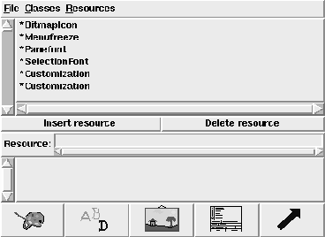

XFappdef allows to interactively manipulate an X Resource file. It is possible to add and remove resource name specifiers. There are menus, where all known program classes are listed, and menus showing a set of commonly used resource names. For certain resources, there exist special dialogs, where the user can interactively select/specify the value for a resource. The program has dialogs for Font, Color, Cursor File and Pixmap selection. This program is part of the XF distribution and is used to manipulate the XF resources, and the resources for the program that is build with XF .

Figure: The xfappdef program
The upper list contains all resource specifications that are given in the application resource file. The two buttons below this list control the insertion and deletion of resource specifiers. The entry contains the currently selected resource specifier, or the name of a resource specifier that should be inserted or deleted. The text field contains the value of the currently selected resource specifier, or the new value to be inserted. The buttons at the bottom activate special dialogs that support the setting of certain resource types.
To load, merge and save the resource file, the menubutton (File) is used. The menubutton (Classes) provides access to all application class names that are known. By selecting the menubutton (Resources), a selection of commonly used resource names can be accessed. Selecting an application class name or a resource name automatically inserts this value into the entry field that shows the resource name specifier.